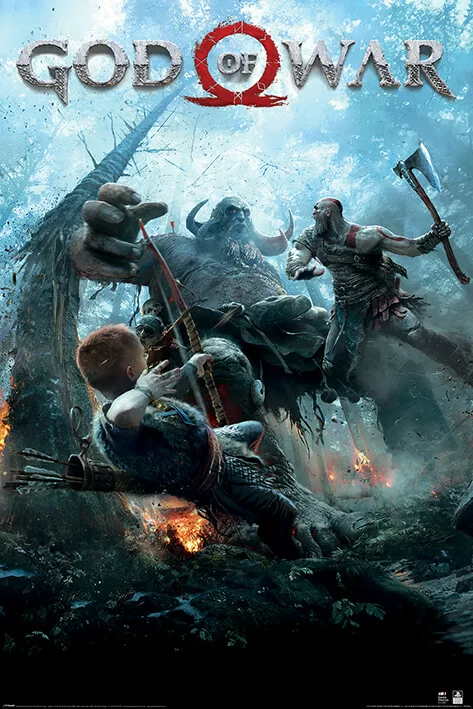

God Of War
É um jogo divertido com várias aventuras e muitos desafios incríveis!

historia do jogo
Muitos anos depois de Kratos desencadear o inferno na Grécia Antiga e deixar o Olimpo de joelhos, ele vive uma vida tranquila em Midgard com a sua esposa Faye e o seu filho Atreus. O jogo começa pouco depois da morte de Faye, com Kratos e Atreus a prepararem-se para realizar o seu último desejo: espalhar as suas cinzas no pico mais alto dos nove reinos.
Antes da sua partida, um misterioso homem tatuado confronta Kratos e provoca-o agressivamente para uma luta que destrói praticamente toda a paisagem em redor. Este estranho tem poderes divinos mas no final é derrotado por Kratos, que parte o seu pescoço e atira o seu corpo de um penhasco. Com medo de que a sua casa não seja mais segura, Kratos diz a Atreus para arrumar as suas coisas.